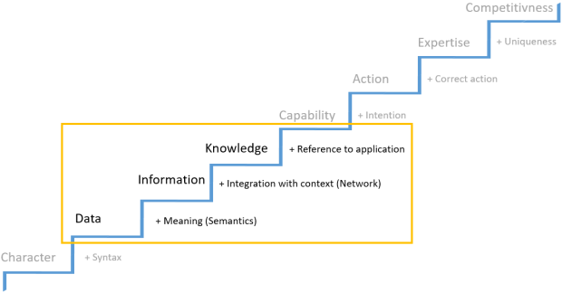

CDH2 data model
CDH2 uses a generic data model (GDM) to define all data, that you want to be processed.
This generic data model gives you the flexibility to model your source data in a consistent and coherent way, yet regarding the given structure of your source records. Its prevailing function is to maintain an appropriate mapping between the data of your source records and the data to be processed in the validation, matching or merging phase of your data management tasks.
More and above this, the GDM is also scalable and expandable according to your prerequisites. This means, for instance, integration of additional master data systems, adding more data objects or defining different versions of the GDM.
Three elements are crucial for the GDM:
- Entities
- Fields
- Relations
The following sub-sections discuss some basic principles about this matter.
You might have heard from the staircase of knowledge, that leads from the lower stair landing - represented by characters or data - to the top step - represented by expertise and competitiveness. Particularly important for our purpose here is the lower part of that staircase: The steps that have to be taken in order to generate information out of data and knowledge out of information. However, let us first come to a better understanding about some concepts on this matter:
- Data are facts about objects, while objects are something touchable, perceptible or imaginable like items or entities.
- Information is data with meaning (semantics). I.e. Information is data that stands in a meaningful context. Information can be used to prepare decisions or actions.
- Knowledge is the result of a purposeful cross-linking of processed information.
Knowledge can be distinguished between implicit and explicit knowledge. While implicit knowledge is represented by the personal knowledge, experience or opinion of an individual person, explicit knowledge is available in a methodically and systematically prepared form. Therefore, it is independent from individual persons and can be stored in databases as well as it can be processed by software systems.

The GDM can be seen as a technical implementation of this picture. While data stored in a single data field doesn't deliver any additional meaning at all, an entire record consisting of multiple fields can provide enough additional semantics to generate information. Even more, when the data fields are modeled for different data objects - so called entities. The entity scheme allows to establish relations between different data objects.
By doing so the GDM adds more context to an information, than you might have expected in the first place. Adding context to an information means to generate knowledge.
Entities are classes of data objects like locations, persons or organizations. E.g. the entity 'PERSON' contains fields like 'Salutation', 'Gender' or different name elements, while the entity 'LOCATION' contains fields for postcodes, street names or house numbers. Every record contains data fields that are either part of the 'PERSON' entity or the 'LOCATION' entity.
Those entities are dependent from each other in various ways. They can be made visible by an extensive set of self defined relations. E.g. a person can be related to a location in more than one way. The location can be a living place, a working place or the place of birth to a person. In a nutshell: The GDM consists from entities, fields and their relations. The following entities are available within the GDM:
- PERSON
- ORGANIZATION
- LOCATION
- PHONE
- WEBSITE
- META
The CDH2-GDM provides you with such entities to ensure a consistent and coherent mapping between your source data and the data intended for use in a golden record. And what is more, the GDM enables you to create your own self-defined data model (Customer Data Model (CDM)), that enhances the GDM. This Customer Data Model (CDM) can be a subset of the GDM but can also extend the given set of entities.
Fields contain the actual data. These data belongs to certain data types, that are part of the respective field definition. From this perspective data fields can be seen as attributes that describe an entity. For each entity defined within the GDM a different set of fields is determined. Dependent from the type of content that is stored in a field, the data fields can be of different data types, like string, bool or date.
Relations describe how an entity can be dependent from another entity. Important here is, that relations always have a direction: they point from one entity to another. This means that most relations can be seen as hierarchical relations, like a part - whole relation or a child - parent relation and vice verso.
For example: A person can obviously be related to other persons. The types of relation might be: married to..., customer of ... or child of... . A person can also be related to an organization with relation types like: owner of..., supplier of... or employee of..., etc. However, a relation between entities is not necessarily a 1:1 relation. An organization is probably related to multiple persons like employees, customers or suppliers. A person can be related to multiple locations like working place or place of living. A location, on the other hand, can be related to multiple persons like families living in a flat with a common address .
With the possibility to select various self defined relations for each entity and to add self-defined relations to your data model, CDH2 provides you with a powerful tool not only to extract and consolidate your customer master data but to gain knowledge about your customers.
As mentioned above: Relations always have a direction. By specifying certain rules for a direction, you can control the outcome of processed records. Those rules are called cardinality rules. They govern how many entities of a certain type may occur, given a certain record type and source system. The following cardinalities are available:
|
N:M |
Multiple source entities can point to multiple target entities. (Default value) |
|
1:M |
A single entity points to multiple target entities |
|
M:1 |
Multiple source entities point to a single target entity |
.For more detailed information see Data model configuration